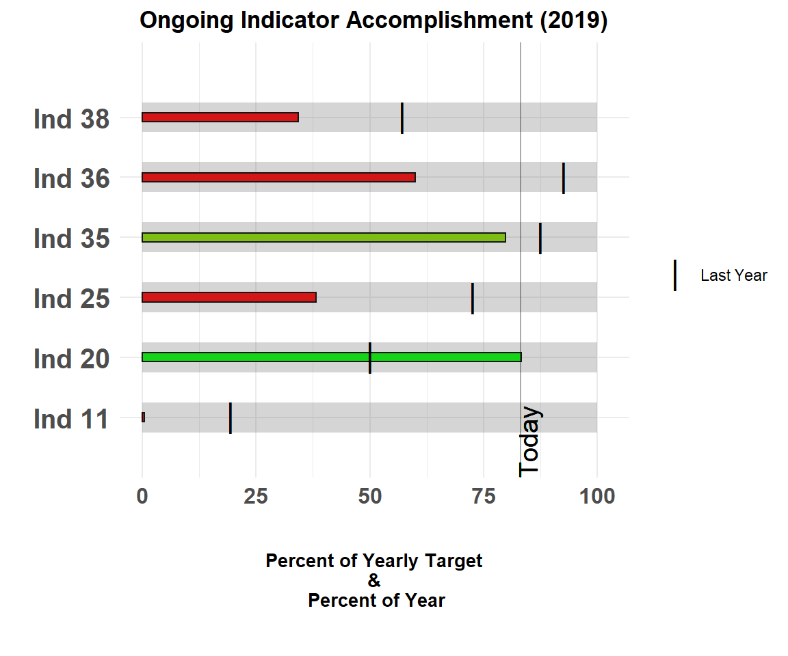

Introduction to bullet charts
intro-to-bullet-charts.RmdWhat is a bullet chart?
The bullet chart was invented by Stephen Few, for the purpose of showing tons of info in a condensed form in KPIs.
This type of graph is a variation on a typical bar graph with a thick line presenting an important point for that indicator (benchmark, performance target, etc.) and other bars in the background that can signify different levels of performance (low-high, bad-good, etc.). The bullet chart makes it very easy to compare between related measures (e.g. present status versus status at similar time in the past).
The {bulletchartr} functions
{bulletchartr} contains 4 different chart functions divided into two categories, the regular bullet chart (bullet_chart()) and the time-comparison versions (bullet_chart_wide(), bullet_chart_symbol(), and bullet_chart_vline()).
Regular bullet_chart()
The output of the bullet_chart() function most closely resembles Stephen Few’s design:
library(bulletchartr)
## load example data
load(read_example("df_bc.rda"))
bullet_chart(dataframe = df_bc)The single black bar represents the current value of the indicator while the different hue columns represent certain qualitative labels. Currently, the labels are set to “Low”, “Medium”, and “High” but in future versions we would like to have the user be able to input their own labels. The fill color of the qualitative values go from a darker hue from “Low” to a lighter hue for “High”. The red symbol denotes the target value set for that indicator.
Each indicator has it’s own set scale with a minimum value set to 0 and a maximum value with several breaks/labels in between. For now the original Stephen Few design bullet chart is the only one using a regular scale along the x-axis. This may change in the future.
Time-comparison bullet chart
The time-comparison version of the bullet chart is what we use at ACDI/VOCA to track the progress of our indicators/KPIs against a target. It is a slightly modified version of the original bullet chart with the main difference being the x-axis. As you can see, the bars show the progression along the horizontal-axis presenting the percentage of the yearly target completed. Also, along this axis is the percent of the year gone by with a vertical line indicating what exact percentage “Today” is along this percentage. It is necessary to use percentages as we have multiple indicators of varying units/parameters for each project!

The different grey colored bars represent the values of the indicator at “Last Week” and “Last Year”. The grey scaled bars can represent any qualitative ranges such as “bad - good - excellent” or “disabled - repairing - fixed”, etc. In the near future we will look to expand the capabilities of this package to allow users to specify these qualitative ranges to fit their needs.
bullet_chart_wide()
bullet_chart_wide() is similar to the standard bullet chart but uses different thicknesses for the bars as the benchmarks for previous time points (last week and last year) to further accentuate the difference graphically.
bullet_chart_symbols()
bullet_chart_symbols() shows a version with different symbols representing the indicator value for last week (diamond) and last year (circle).
bullet_chart_vline()
bullet_chart_vline() provides a version with a single colored bar representing the current value for the indicator along with a black vertical line representing the indicator value at this time last year.

For more information on the different arguments of {bulletchartr}, please read the “bulletchartr function arguments” vignette.